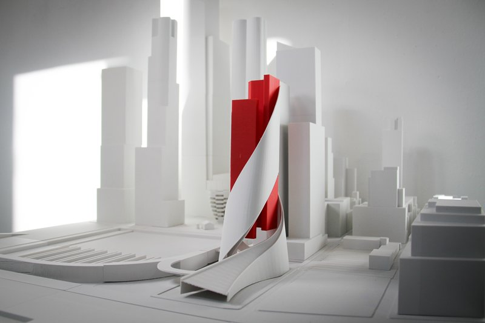
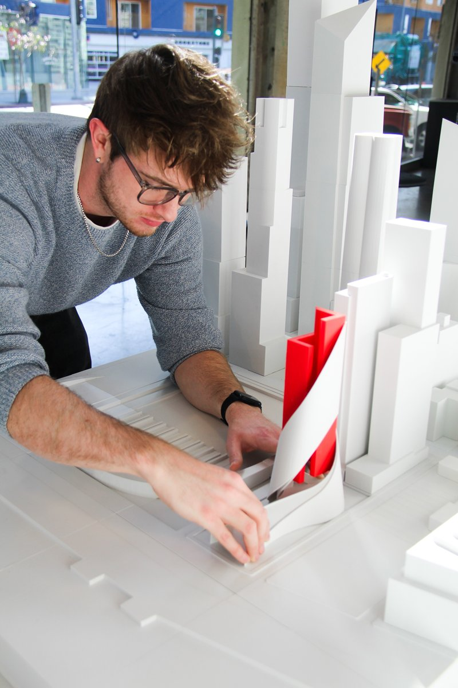
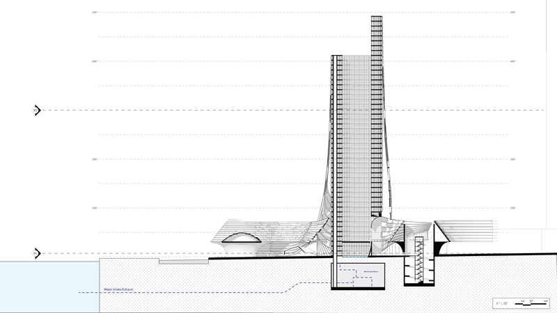
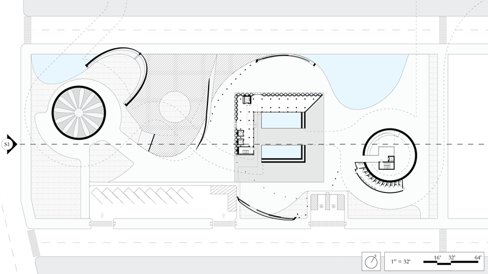
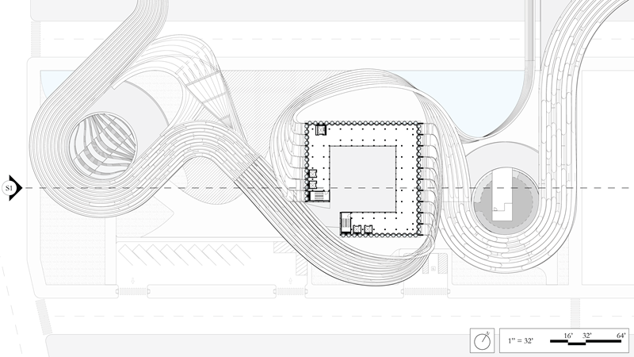
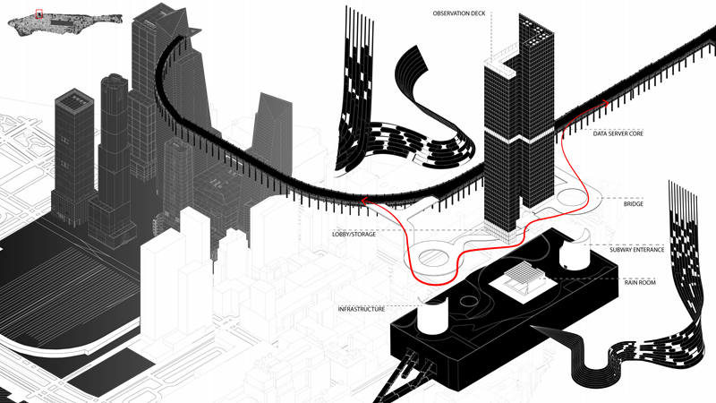

Building — Archive & park
The Last Archive — Media Museum
A New York media archive and public park with a responsive algae facade.






Building — Archive & park
A New York media archive and public park with a responsive algae facade.





